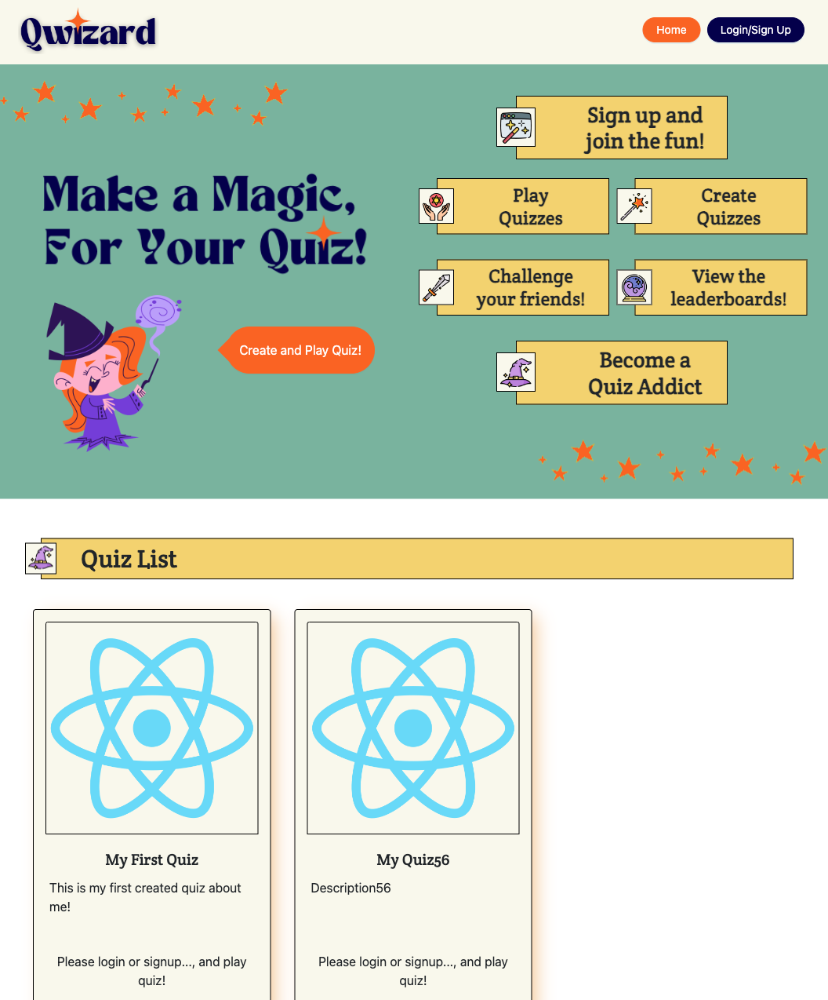

Sawako Goshima
Front End Developer
About Me
With over 5 years of experience as an E-Commerce Contents Director in Tokyo, Japan, I have successfully
created compelling content that has stimulated consumer activity. During this time, I honed my skills in
crafting engaging and impactful digital experiences.
Currently, I am working as a freelanced web
developer to build up a web using WordPress (created the original theme using PHP). And also I am working as a
part-time Spa Therapist specializing in remedial massage at a prestigious 5-star hotel in Australia. My
passion for this industry lies in ensuring the utmost satisfaction of each client I serve.
However, my
true passion lies in leveraging the power of web services to make a significant impact on a larger scale. I
aspire to become a web developer, using my skills and expertise to create immersive online experiences that
delight and satisfy a vast number of clients across various devices.
To pursue my passion, I proactively
studied web development for two years before enrolling in The Coding Boot Camp at the University of Sydney.
This intensive program equipped me with comprehensive knowledge and practical skills, further strengthening my
foundation in web development.
I am now ready to embark on a new journey, combining my creative content
creation background, client-focused mindset, and technical expertise to build innovative and user-centric web
solutions. I am eagerly seeking opportunities where I can contribute my skills and passion to create
exceptional digital experiences for clients worldwide.
Thank you.
Web Skills
-
HTML5/CSS3
Proficient in writing clean, semantic HTML code. Experienced in creating visually appealing styles and layouts using CSS3 techniques.
-
JavaScript/jQuery
Proficient in writing clean and efficient JavaScript code.Experienced in utilizing jQuery library for simplified DOM manipulation.
-
WordPress/PHP
Expertise in creating custom WordPress themes and creating the original templates with PHP.
-
Node.js
Skilled in building server-side applications using Node.js and Express.js framework.
-
MySQL/NoSQL
management using MySQL. Also, Familiar with NoSQL databases like MongoDB, capable of designing and implementing efficient data models.
-
React.js
Proficient in developing dynamic and interactive user interfaces using React.js and its ecosystem (React Router, Redux, etc.).
Works
- 